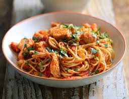

Seafood Spaghetti

Description
This speedy seafood pasta is ready in just 20 minutes. A satisfying, low-fat recipe which makes the most of frozen seafood and chopped tomatoes
Ingredients
- 1 tbsp olive oil
- 1 onion, chopped
- 1 garlic clove, chopped
- 1 tsp paprika
- 400g can chopped tomatoes
- 1l chicken stock (from a cube is fine)
- 300g linguine or spaghetti, roughly broken
- 240g frozen seafood mix, defrosted
- handful of parsley leaves, chopped, and lemon wedges, to serve
Steps
- In a large pot of salted boiling water, cook spaghetti according to package directions until al dente. Drain and return to pot.
- Meanwhile, in a large skillet over medium heat, melt butter. Add shrimp and scallops and season with salt and pepper. Cook 2 minutes per side, then transfer to a plate.
- To skillet add shallot and garlic cook until soft and fragrant, 3 minutes. Add milk, broth, Parmesan, tomatoes, and parsley and season with salt. Simmer 3 minutes more, then return shrimp and scallops and toss until combined. Squeeze with lemon juice .
- Add cooked spaghetti and toss until fully coated.
- Add cooked spaghetti and toss until fully coated.
Go to Home Page